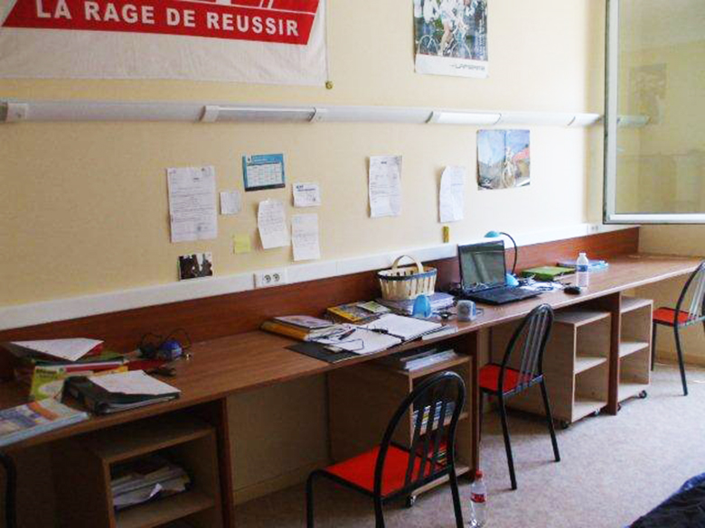
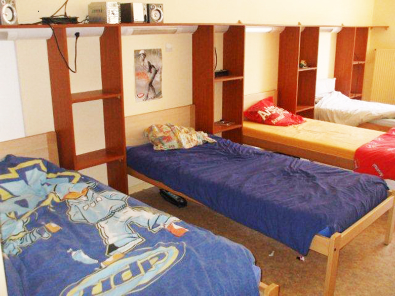

Vous pourrez retrouver ici les informations sur les sujets suivants :
Le lycée Henri Loritz dispose d’un service d’internat pouvant accueillir tous les garçons et les filles des classes de seconde, de première et de terminale, exceptionnellement des étudiants, et d’un service de restauration pouvant accueillir tous les élèves et étudiants sans exception. L’élève choisit entre 3 catégories possibles : Externe, Demi-pensionnaire, Interne. L’internat est ouvert du lundi matin au samedi matin. Des élèves peuvent exceptionnellement être accueillis le dimanche soir, avec une incidence sur le tarif d’internat. Tous les tarifs sont arrêtés par la Région Lorraine. L’élève demi-pensionnaire a la possibilité de choisir le nombre de jours où il prendra ses repas (forfait modulé de 1 à 5 jours). Les changements éventuels de régime ne pourront être accordés qu’à titre exceptionnel et principalement à chaque début de trimestre, pour des motifs particulièrement circonstanciés et sur demande écrite auprès du chef d’établissement. Les élèves externes désirant déjeuner occasionnellement peuvent acheter un badge jetable. Une remise d’ordre (réduction) est accordée sur le prix de la pension ou de la demi-pension aux familles dont l’enfant est absent, avec justificatif, pendant une durée supérieure à 2 semaines consécutives pour maladie. Les autres cas de remise d’ordre sont énumérés dans le règlement intérieur du service hébergement. Le lycée dispose d’un service d’internat pouvant accueillir garçons et filles de la seconde aux classes post-baccalauréat. Toutes les demandes d’inscription sont examinées dans la limite des places disponibles (priorité étant laissée aux élèves les plus éloignés). Il représente un service rendu aux élèves, les aidant dans la conduite de leurs études et favorisant leur réussite scolaire. Les règles de vie dans la communauté que représente l’internat sont élaborées dans le souci de permettre à chacun de travailler et de vivre dans le respect d’autrui. L’internat est un service annexe de l’établissement scolaire. Le règlement intérieur du lycée s’y applique intégralement. Les jours d'ouverture Sauf autorisation spécifique accordée par le chef d’établissement, l’internat est ouvert du dimanche soir à partir de 20 heures jusqu’au samedi à midi. L’internat est fermé les fins de semaine et pendant les congés scolaires. Les jours fériés (1er Mai, ascension …..) sont gérés comme des dimanches et à ce titre les parents doivent impérativement renseigner le document distribué ou prévenir du retour de leur enfant par courrier, fax ou tout document portant leur signature une semaine à l’avance afin de faciliter l’accueil des internes.
 